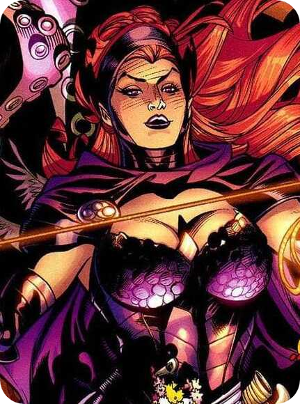

Circe
Circe
A Deus tecelã da Magia
Hecate, Sociedade Secreta
Vilão
Humana
Viúva
Bruxa, Princesa
Circe |
Identidade
Nome Real
Alter Ego
Outros Nomes
Afiliação
Moralidade
Raça
Estado Civil
Ocupação
História
Circe
Circe
A Deus tecelã da Magia
Hecate, Sociedade Secreta
Vilão
Humana
Viúva
Bruxa, Princesa
"As mulheres são tão desconcertantes e perigosas umas para as outras como nós somos para o homem. Você não pode fazer previsões sobre o que faremos a seguir, quem poderemos esmagar... Quem poderemos amar." -Circe
Circe, a Tecelã, é uma poderosa bruxa imortal e inimiga de longa data da Mulher Maravilha e das Amazonas da Ilha Paraíso. Dentre seus inúmeros poderes mágicos, o mais conhecido desde os tempos mitológicos é o de transformar pessoas em animais híbridos, seus Ani-Men.